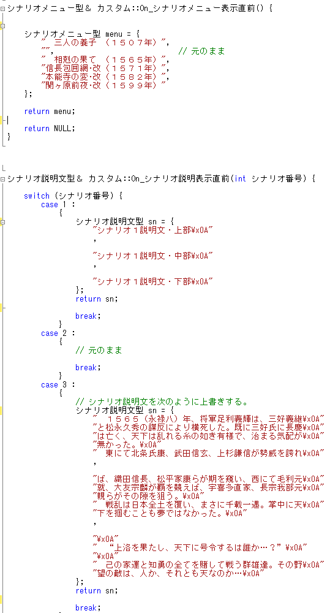
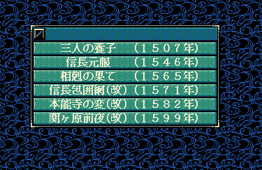
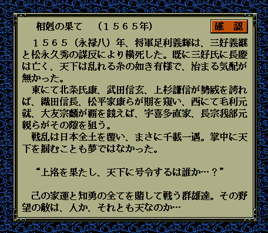

前節では、「シナリオタイトル」や「シナリオ説明文」が記載されているファイルと位置を探りあてました。
今節では、実際に書き換えてみましょう。
さて、では、実際にシナリオ名や、シナリオ説明文を書き換えて、コメントを外して実行してみましょう。

さて、再びいつものように、ビルドして、エラーが無いことを確認したら、
天翔記フォルダへと反映させ、天翔記を起動して変化を確認してみましょう。


シナリオ名や説明文が、変化していることが確認出来れば、
いろいろと「シナリオタイトル」や「シナリオ説明文」を書き換えてみましょう。
今回の節に関係するリファレンスは、
となります。
以上となります。お疲れさまでした。